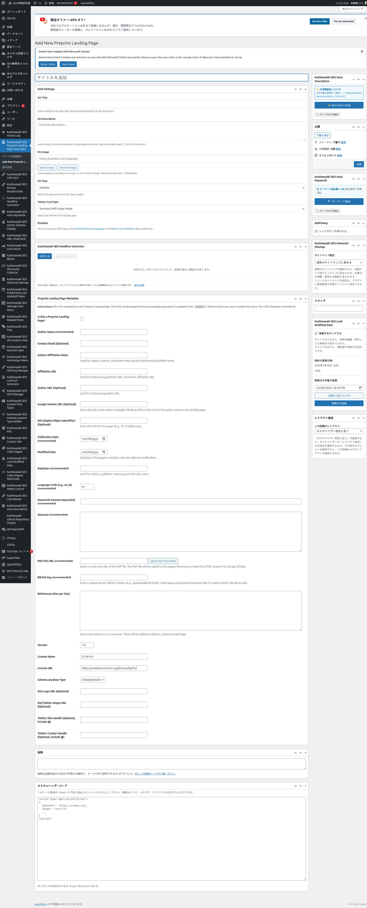
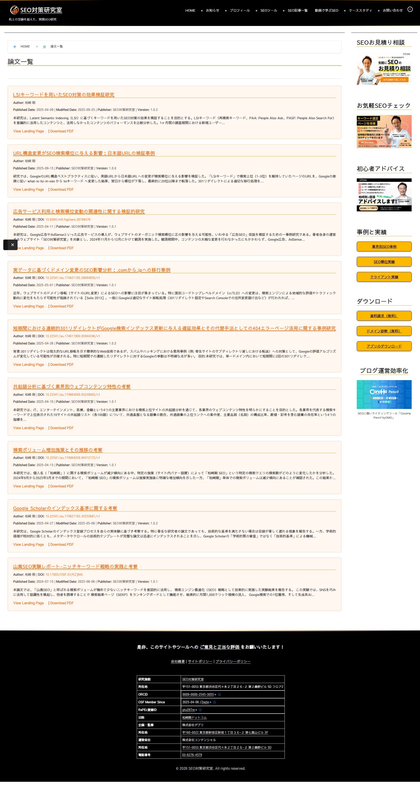

論文管理
カスタム投稿タイプ「Preprint Landing Page」を使って論文情報を登録・管理します。29個のメタフィールドで詳細な学術メタデータを設定できます。
新規論文の登録
1
管理画面左メニュー「Preprint Landing Page」→「Add New」をクリック
2
タイトルに論文名を入力（これがランディングページのh1になります）
3
「Preprint Landing Page Metadata」メタボックスで各フィールドを入力
4
「公開」をクリックすると、/paper/{投稿ID}/ でランディングページが自動生成されます

必須フィールド
以下の6つのフィールドは必須です。未入力の場合、ランディングページは正常に生成されません。
| フィールド名 | 説明 | 入力例 |
|---|---|---|
| Author Name（著者名） | 論文の著者名 | 柏崎 剛 |
| Publication Date（公開日） | 論文の公開日（YYYY-MM-DD形式） | 2025-04-09 |
| Publisher（出版者） | 論文の出版元 | SEO対策研究室 |
| Keywords（キーワード） | カンマ区切りのキーワード | SEO対策,LSIキーワード,効果検証 |
| Abstract（要約） | 論文の要約文 | 本研究は... |
| PDF File URL（PDFファイル） | PDFファイルのURL | メディアライブラリから選択 |
オプションフィールド
| フィールド名 | 説明 | 備考 |
|---|---|---|
| Contact Email | 連絡先メールアドレス | 論文ページに表示 |
| Author Affiliation Name | 著者の所属組織名 | リンク付きで表示 |
| Author Affiliation URL | 所属組織のURL | Affiliation Nameと連動 |
| Author Personal URL | 著者の個人ページURL | - |
| Google Scholar URL | Google Scholarプロフィール | 著者名リンクに使用 |
| DOI | デジタルオブジェクト識別子 | 例: 10.6084/m9.figshare.28788476 |
| Modified Date | 更新日（YYYY-MM-DD） | 空欄の場合は公開日を使用 |
| Language Code | 言語コード | デフォルト: en |
| BibTeX Key | BibTeX用の引用キー | 例: Kashiwazaki2025LSI |
| References | 参考文献リスト | 1行に1件 |
| Version | 論文のバージョン | 例: 1.0.2 |
| License Name / URL | ライセンス名とURL | 例: CC BY 4.0 |
| Schema.org Base Type | スキーマタイプ | ScholarlyArticle, TechArticle, Report, Article, WebPage |
| Site Logo URL | サイトロゴのURL | JSON-LDに使用 |
| OG/Twitter Image URL | SNSシェア画像のURL | OGP/Twitter Cardに使用 |
| Twitter Site/Creator Handle | Twitterアカウント | Twitter Cardに使用 |
URL構造
このプラグインは完全動的モードで動作します。物理的なファイルやディレクトリは一切作成されません。
| URL | 内容 | 例 |
|---|---|---|
/paper/ |
論文一覧ページ | http://example.com/paper/ |
/paper/{ID}/ |
個別論文ページ | http://example.com/paper/19856/ |
/paper/{ID}.pdf |
PDF直接ダウンロード（301リダイレクト） | http://example.com/paper/19856.pdf |
/paper/paper-sitemap.xml |
XMLサイトマップ | http://example.com/paper/paper-sitemap.xml |
